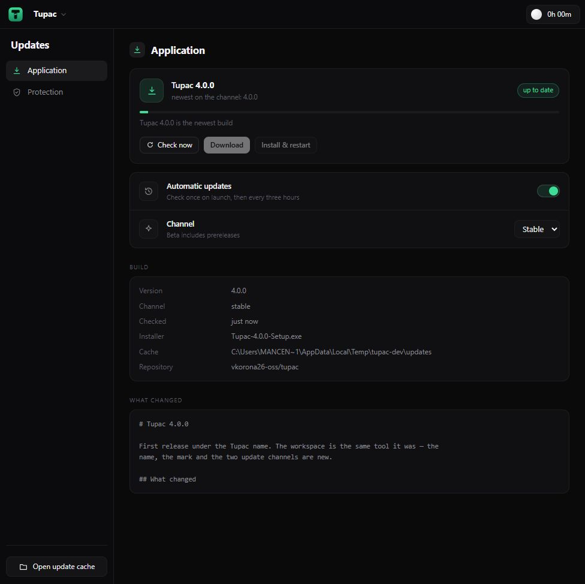
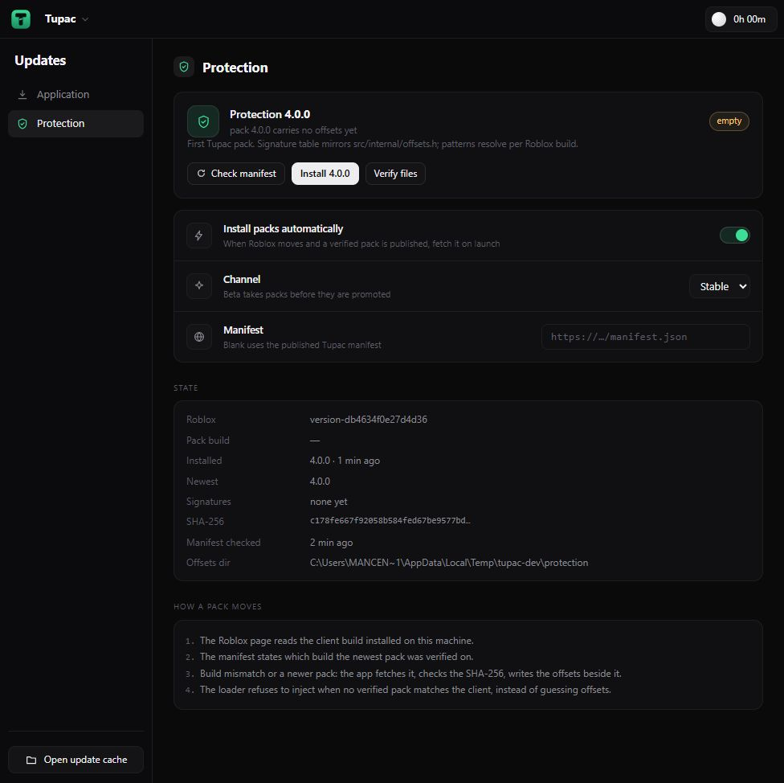
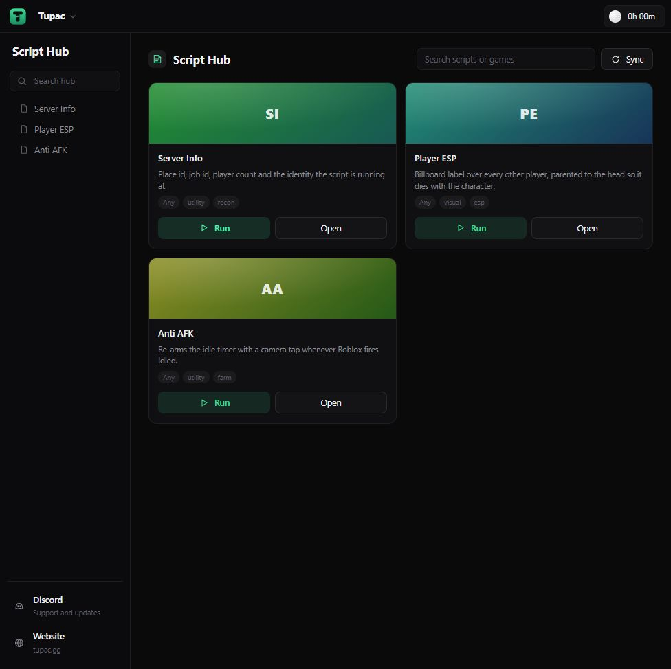
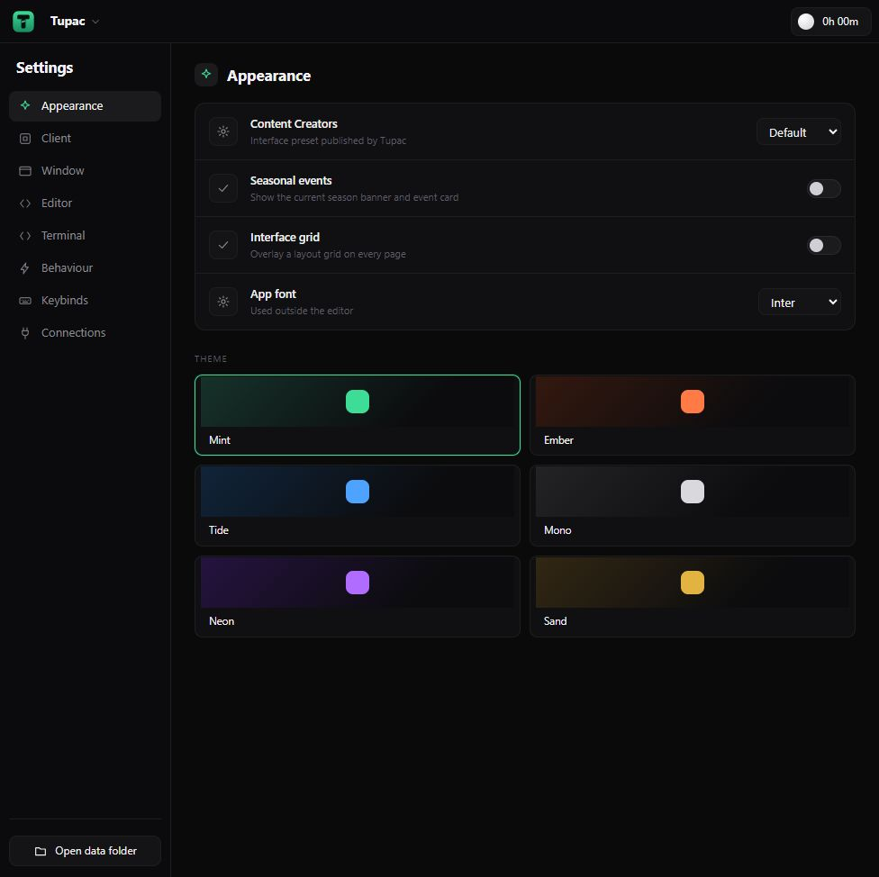

Luau editor
Syntax highlighting, a real gutter, auto-indent, Tab block-indent, Ctrl+Enter to run and Ctrl+S to save. Tabs keep their own state.
Tupac is one window for the whole loop: write Luau, run it against a live client, watch the console, keep the scripts that worked. It updates itself, and when Roblox moves, its protection moves with it.

Each part of the loop has a place, and every place is wired to the same pipe the module serves.
Syntax highlighting, a real gutter, auto-indent, Tab block-indent, Ctrl+Enter to run and Ctrl+S to save. Tabs keep their own state.
Roblox output, terminal and problems split into channels. Lines keep arriving after a run times out, so nothing the module printed is lost.
Works offline with a bundled catalog, then layers a remote index on top. Search, Run and Open, with the code cached so the list survives a restart.
Checks once on launch and every three hours after. Downloads the installer, checks it against the release hash, installs on your word. Stable and beta channels.
A pack per Roblox client build: signatures, offsets and the build they were verified on. New client, new pack, fetched and hashed before the loader may touch it.
Reads every version in %LOCALAPPDATA%\Roblox\Versions, shows which bootstrappers are present, and launches a client without patching anything.






Two independent channels, both visible in the window, both refusing to pretend.
The desktop app is a self-contained Windows build. The browser bridge ships beside it: same UI, same dispatcher, no Electron.
Checksums are published with every release. Windows SmartScreen may ask once for an unsigned build.
The app asks GitHub for the newest release on your channel, once at launch and every three hours after. If a newer build exists it downloads the installer, checks it against the SHA-256 published with the release, and waits for you to press install. Nothing runs silently.
Roblox rebuilds its client, and the functions the loader calls move. A pack is the offset and signature table for one client build, published with the build tag it was verified on. The app installs the pack whose build matches the client on your disk.
The client build changes, the pack no longer matches, and the app says so: client is … , pack was verified on …. The loader refuses to inject until a pack for the new build is published and verified. It never guesses an offset.
The workspace ships free. A licence key unlocks the module side; browsing the editor, hub, updates and settings works without one.
The Roblox page detects both and shows whether they are installed. It never patches them; launching stays theirs.
Everything lives in %LOCALAPPDATA%\Tupac: settings, saved scripts, auto-execute files, downloaded installers, protection packs and the hub cache. Nothing is uploaded. A machine that ran the old 2P build is migrated once, in place.
Download, inject, execute. The rest of the loop is already wired.